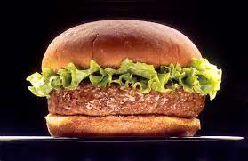

Burger Recipe

Lasagna is a wide, flat sheet of pasta. Lasagna can refer to either the type of noodle or to the typical lasagna dish which is a dish made with several layers of lasagna sheets with sauce and other ingredients, such as meats and cheese, in between the lasagna noodles.
The best way to layer your lasagna is to start with a layer of red sauce, follow it up with a layer of white sauce, then pasta, then cheese. Follow this pattern until you've filled your tray.
ingredients
Spread a thin layer of pasta sauce in the bottom of a baking dish.
Make a layer of cooked lasagna noodles.
Spread an even layer of the ricotta cheese mixture.
Spread an even layer of meat sauce.
Repeat those layers two times.
Top it with a final layer of noodles, sauce, mozzarella, and parmesan cheese.
Steps:
Boil Or Soak Lasagna Noodles
Make Meat Sauce
Pour Tomato Sauce On The Bottom Of The Baking Dish
Add A Layer Of Lasagna Noodles
Add A Meat Sauce Layer
Add Another Layer Of Lasagna Noodles
Add Tomato Sauce
Add Ricotta Cheese
Add Another Layer Of Lasagna Noodles
Add Tomato Sauce
Sprinkle With Shredded Cheese
Bake The Lasagna